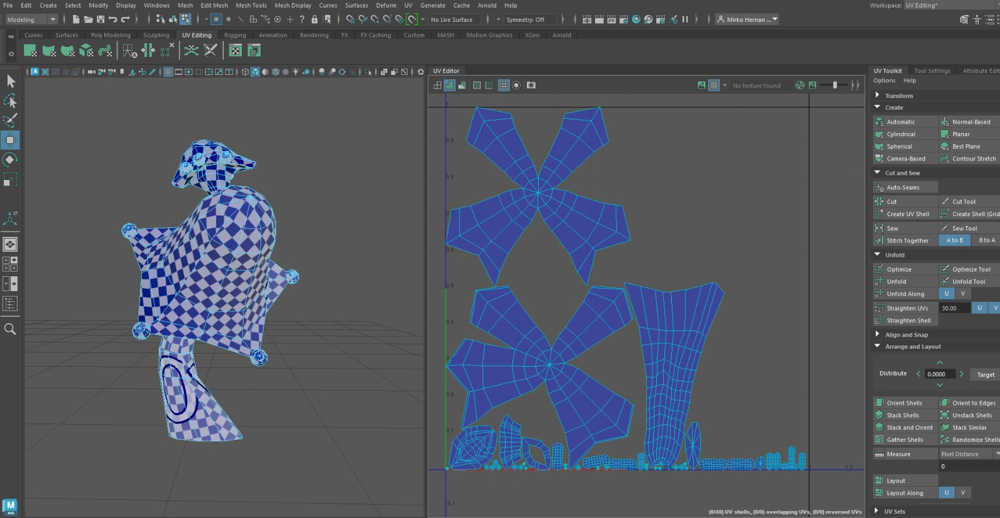
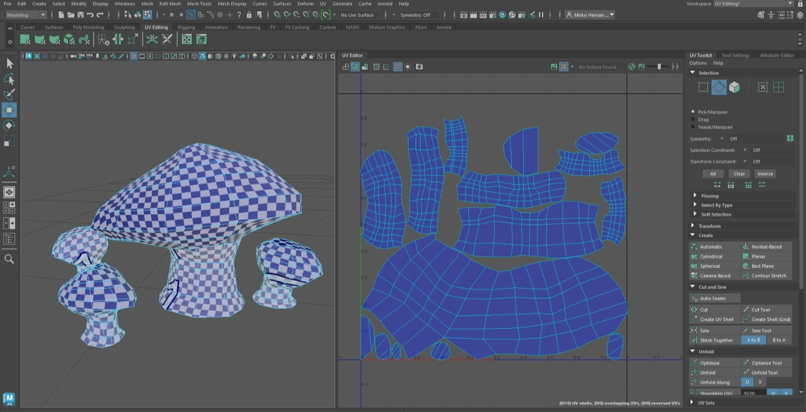
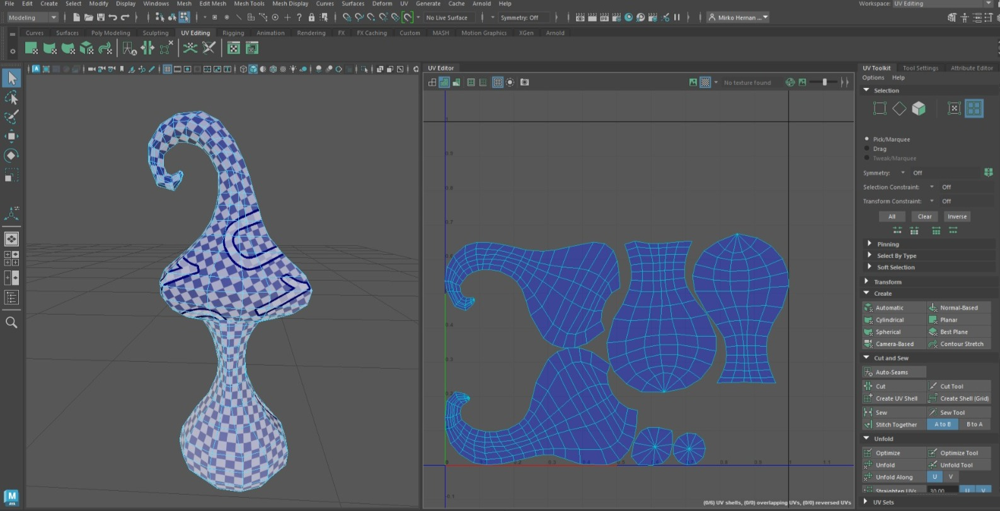

Whiskered Wanderer
Informacion del Proyecto
- Rol→ Modelador 3D
- N° de Integrantes→ 15
- Tiempo→ 1 año
- Motor→ Unity
- Niveles→ 4
Herramientas Usadas
- Autodesk Maya

- Unity

- C#

- GitHub

Acerca del Proyecto
Whiskered Wanderer es una experiencia de exploración y puzles en tercera persona donde el jugador se adentra en antiguas ruinas repletas de mecanismos desconocidos. A lo largo de la aventura, deberá utilizar la tecnología de Feligryth para avanzar por escenarios marcados por el legado de cuatro culturas diferentes, mientras busca la reliquia de Feligryth.
El juego cuenta con 4 niveles, cada uno con desafíos y rompecabezas únicos que el jugador deberá superar para continuar avanzando en la aventura.
Lo que realicé
Aunque mi especialidad principal es la programación de videojuegos, me incorporé a este proyecto durante una etapa intermedia de su desarrollo para brindar apoyo en el área de arte 3D encargándome del modelado y mapeado UV de diversos props utilizados para la construcción y ambientación de los escenarios. Para ello, empleé Autodesk Maya en la creación de los distintos assets. La etapa de texturizado y pintura de materiales fue realizada posteriormente por un artista especializado utilizando herramientas específicas para dicha tarea.
En esta sección se muestra el desarrollo de vegetación, hongos, piedras y diversos assets utilizados para ambientar el mundo del juego. Todos los elementos fueron modelados utilizando técnicas Low-poly y tomando como base imágenes de referencia para mantener una estética visual


UV Mapping
En esta sección se muestran ejemplos del mapeado UV aplicado a modelos 3D, utilizando checker maps para verificar la correcta distribución de las UVs y facilitar el proceso de texturizado.



Videos
Los siguientes videos muestran parte del proceso de creación de los modelos 3D presentados anteriormente, permitiendo observar el modelado completo de cada asset.
En las siguientes imágenes se pueden observar los modelos 3D ya integrados en el juego y utilizados para ambientar los diferentes escenarios.